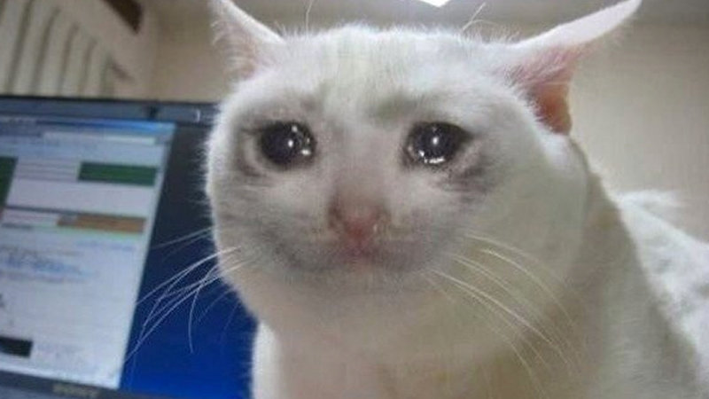

Kitten Paradise
Kitten Paradise
About us!
Kitten Paradise
Kitten Paradise
About us!
Kitten Paradise is a non-profit Kitten Shelter and Dojo, purely relying on awakening the lion inside of our sheltered kitties.
Our kittens are masters of Cat-fu.
Our guidance have made the kittens the best friend of dogs and man.
Every day, about 1,000,000 kittens become homeless
This is your chance to save them!
"To master the way of the paw, is to master the roar of the beast inside of your heart." -Benjamin McLockinpaws
"Cats be vibing"-Mc Catnip